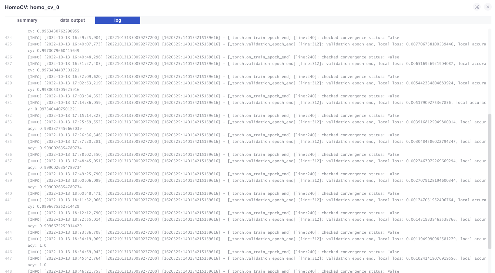

在上一篇已经在本地跑通了肠癌图像分类的整个流程，现在我们将它移植到FATE上，实现联邦学习。
数据预处理
仿照“手写数字识别”任务，将三份训练数据进行预处理。并新建配置文件，处理后的格式如图。
- code/： bind开头的文件是用于数据绑定；colon_conf是conf文件，colon_dsl是dsl文件
- test/：500张测试数据
- val/：500张验证集
train_pX/：第X份训练数据，每一份3000张
- images/：图片文件夹，存放所有图像
- config.yaml：图片文件夹配置：通道数，格式等。
- filenames：images目录下的所有文件名（去掉后缀），每个文件名占一行
- targets：images目录下的所有文件名（去掉后缀）和label，逗号区分，每个文件名和类别占一行。
修改源代码
之前在分析源码时，可以看到homo_nn的模型配置比较定制化，不够灵活，因此我们修改源码实现：
- 修改数据加载
- 使用预训练的vgg16算法模型；
- 使用GPU
- 实现模型评估
修改数据加载
我们知道vgg16传入的图像尺寸为$2242243$，而肠癌数据集的图像格式大小为$7687683$，所以需要先对数据加载进行修改：
修改FATE/python/federatedml/nn/backend/pytorch/data.py的VisionDataSet类的get_item方法：
def __getitem__(self, index): |
修改算法模型
我们需要修改homonn组件下的torch.py文件，FedLightModule类的__init方法
# --------- 修改前 ---------- |
使用GPU
需要修改homo_nn组件下的_torch.py文件，FedLightModule类的training_step、validation_step以及do_convergence_check和encrypt方法。改动如下。
do_convergence_check和encrypt要改动的原因并不清楚，大致来看，应该是在model聚合和加密的时候需要将其从GPU中取出。。不过可以肯定，如此改动就会生效。
def validation_step(self, batch, batch_idx): |
模型评估
以下是一个简单的模型评估代码，在homo_nn文件夹下新建evaluation.py，代码及注释如下
# 导入必要的库，注意这里需要导入homo_nn下的FedLightModule类 |
代码修改完毕。下面进行训练。
联邦学习
分别修改CONF和DSL配置
colon_conf.json
{ |
colon_dsl.json
略
首先数据已经处理成FATE可以读取的格式。
然后将三份数据分发到集群的三台不同的机器上，分别是fate9999，fate9998，以及fate9997
进入三台机器的fate-client container，使用flow table bind -c 命令将文件夹绑定到table。
在发起方FATE9999的client容器中，进入code文件夹，执行flow job submit -c colon_conf.json -d colon_dsl.json启动任务
查看FATE-BOARD Job
他的homo_nn组件输出的日志如下：

模型评估
在job结束后，会保存check point，保存的容器为fate-flow container。
以fate9999为例，保存路径为：
/data/projects/fate/fateflow/jobs/202210131350059277200/guest/9999/homo_cv_0/202210131350059277200_homo_cv_0/0/task_executor/7f86f6064aff11edbd540242c0a70064/model.ckpt
不同角色（guset、host）、不同party_id的机器上路径可能有所差异。
将该路径复制到刚才的evaluation.py的model_path中，执行python evaluation.py，查看输出结果：
Accuracy: 99.20%, Avg loss: 0.022641 |
实验结果
结合baseline的实验结果，可以得到下表。
| 使用的数据 | 训练类型 | 模型评估 |
|---|---|---|
| 全部训练数据（Train_1+Train_2+Train_3） | 本地（GPU） | Accuracy: 99.60%, Avg loss: 0.011775 |
| Train_1 | 本地（GPU） | Accuracy: 73.20%, Avg loss: 0.641481 |
| Train_2 | 本地（GPU） | Accuracy: 71.40%, Avg loss: 0.649055 |
| Train_3 | 本地（GPU） | Accuracy: 56.80%, Avg loss: 0.654335 |
| 全部训练数据（Train_1+Train_2+Train_3） | 联邦（GPU） | Accuracy: 99.20%, Avg loss: 0.022641 |
在增加了部分读写日志，并加以分析可以得到训练的时间分布：
实验分析
使用联邦学习的效果要优于分开训练的模型效果，证明了联邦学习的有效性。
做实验发现，使用CPU进行训练，每个epoch需要大约15分钟，而使用GPU之后，每个epoch仅需要29s左右。使用GPU的计算效率要远远大于使用CPU。
对日志进行分析发现，计算时间约为60s，模型参数加密、解密以及传输的时间约为比例约为600s，二者比例约为1:10。因此可以得出结论：结肠癌联邦学习的时间瓶颈不在于本地模型的训练时间，而是在于模型参数加密、解密以及传输时间。
补充
修改了homo_nn的源码，导致原有的homo_nn的功能失效，所以这里不推荐这样改，更推荐开发新的组件来完成。